PVD sputtering targets
Rare-earth and rare-metal targets, alloy targets and custom specifications for advanced coating and thin-film processes.
View PVD materials →Viilaa · Advanced Materials
Based in Ganzhou, Jiangxi, we develop and manufacture rare metals and advanced materials for semiconductor, display, photovoltaic, electronics, infrared and research applications.
Who we are
Jiangxi Viilaa Metal Materials Co., Ltd. is a new-materials company specializing in the research, production and sale of rare metals and advanced materials. We support both R&D and industrial customers with high-purity materials and coordinated customization.
Our work is grounded in metal purification and powder-production experience, with an emphasis on stable products, practical engineering delivery and close collaboration from sample development to scaled application.
Core portfolio
Rare-earth and rare-metal targets, alloy targets and custom specifications for advanced coating and thin-film processes.
View PVD materials →High-purity inputs for CVD/ALD precursor synthesis, thin films, crystals and research, with adaptable purity and packaging options.
View CVD materials →Foundation capabilities
Experience in rare-metal purification and high-purity raw-material preparation provides a stable base for targets, compounds and specialty materials.
Metal, alloy, spherical and hydride powder experience supports coordinated control of composition, particle size, morphology and packaging.
Purity, composition, form and packaging can be discussed around research validation, material development and industrial requirements.
Credentials & recognition
Selected certificates are shown below. Open any card to view the full-size image.
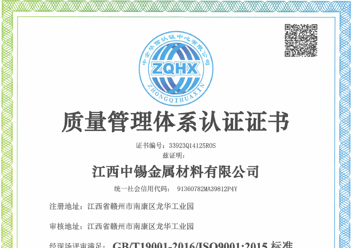
Quality ManagementISO 9001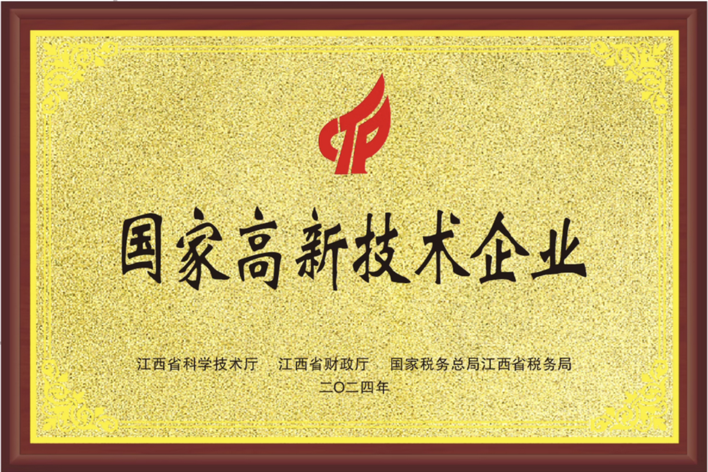
Enterprise QualificationHigh-tech Enterprise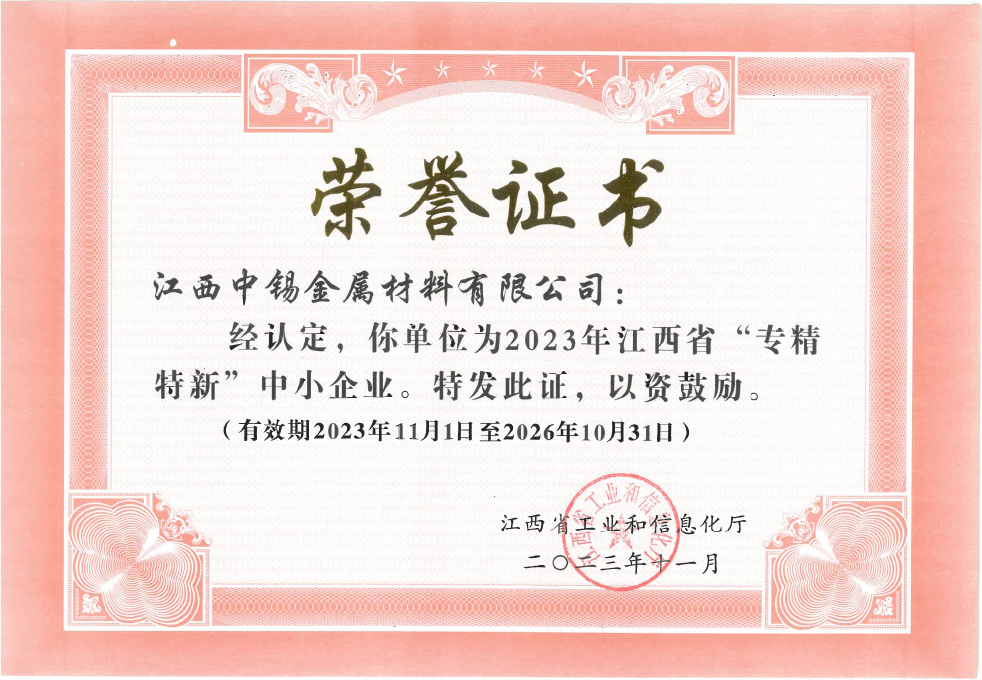
Enterprise RecognitionSpecialized & Innovative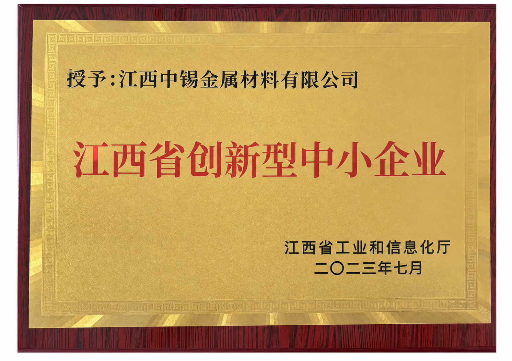
Innovation RecognitionInnovative SME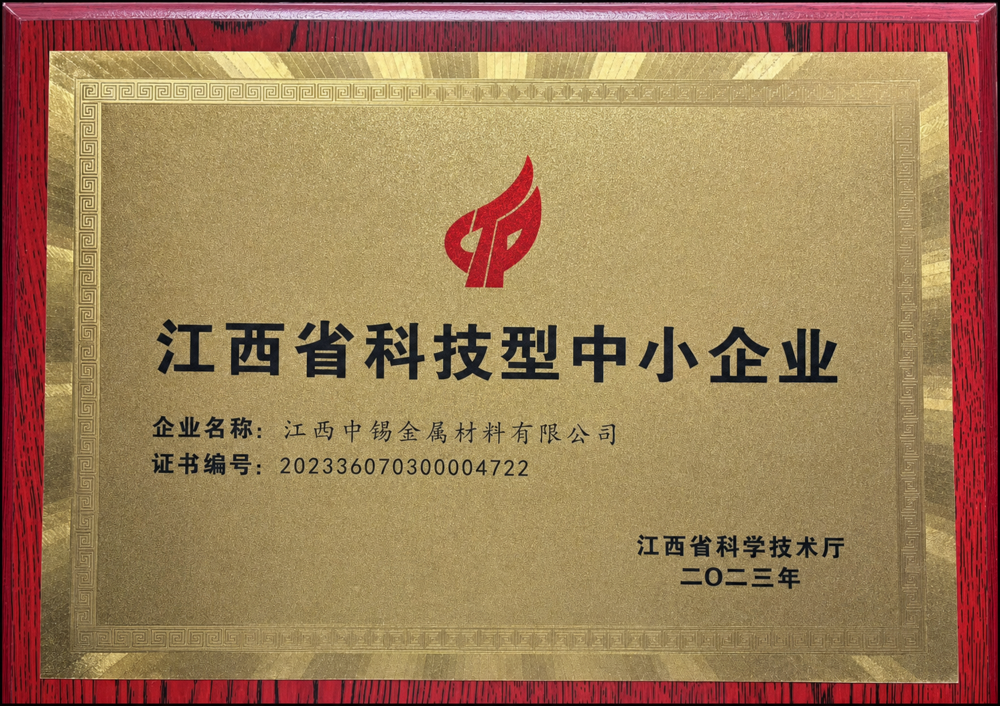
Technology RecognitionTechnology-based SME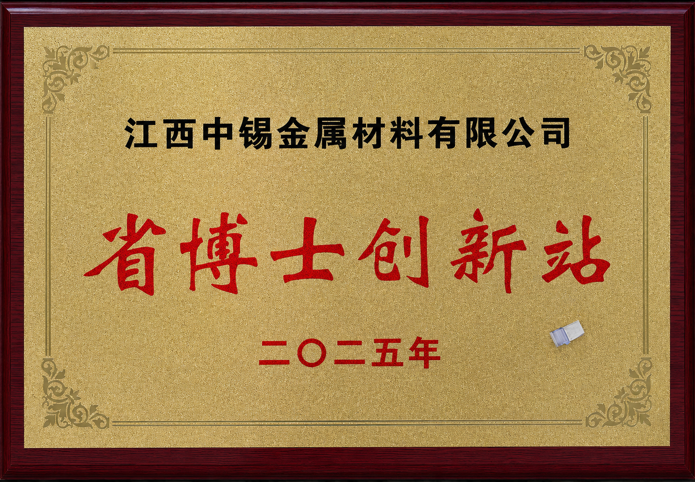
Innovation PlatformProvincial Doctoral Innovation StationPatent capability
27 patent documents are organized by technical theme. Nine representative covers provide a quick visual overview.
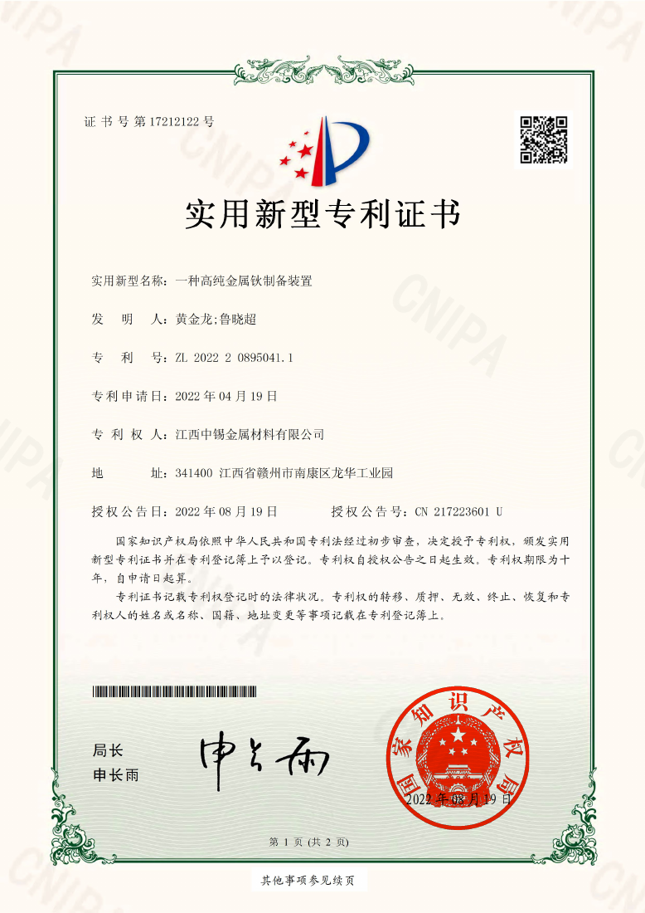
High-purity metalsHigh-purity holmium preparation device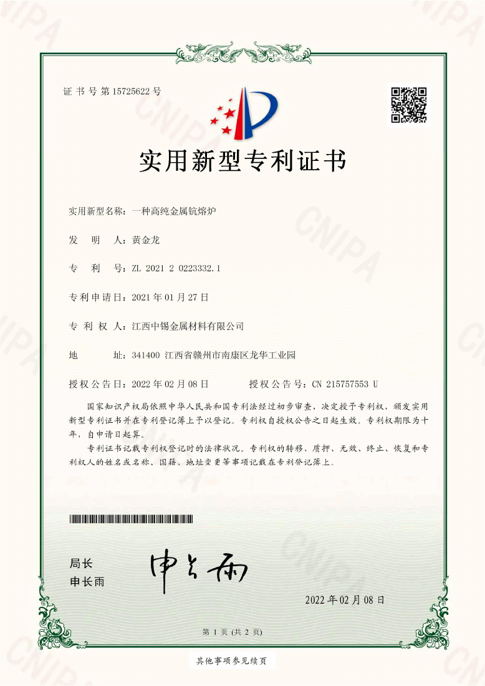
High-purity metalsHigh-purity scandium melting furnace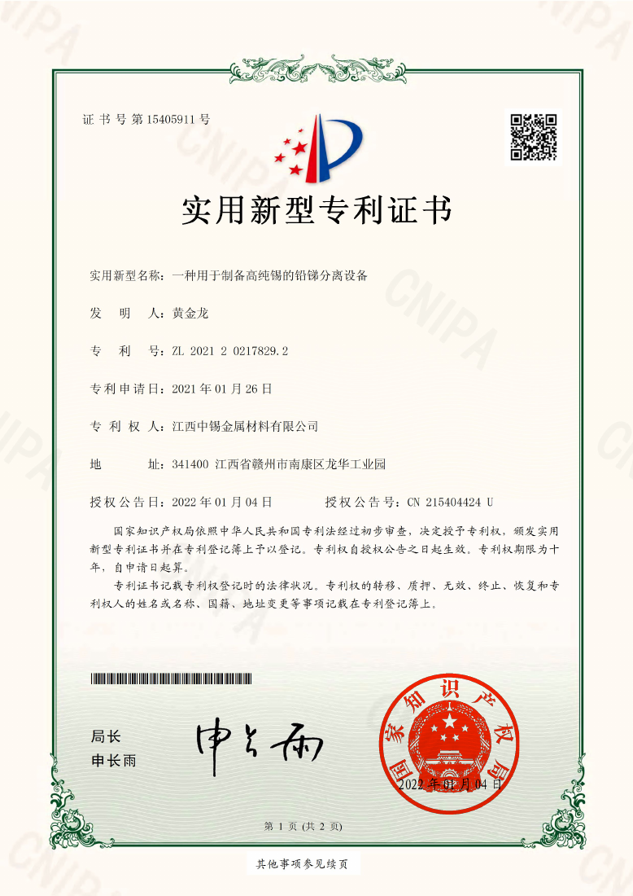
High-purity metalsLead-antimony separation equipment for high-purity tin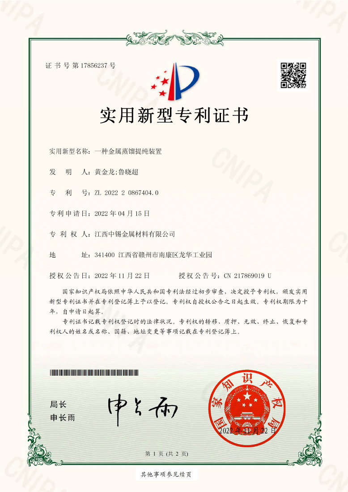
Metal purificationMetal distillation purification device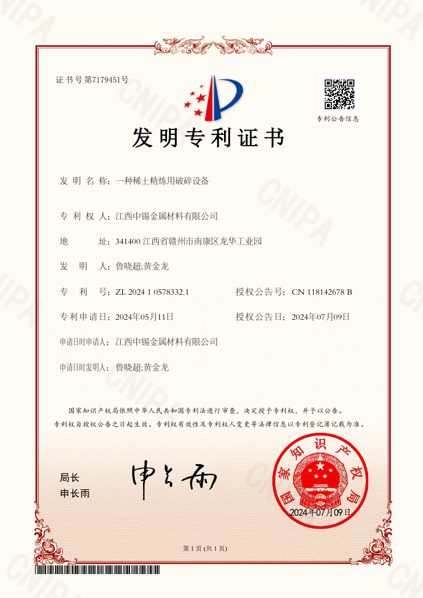
Rare-earth processingRare-earth refining crusher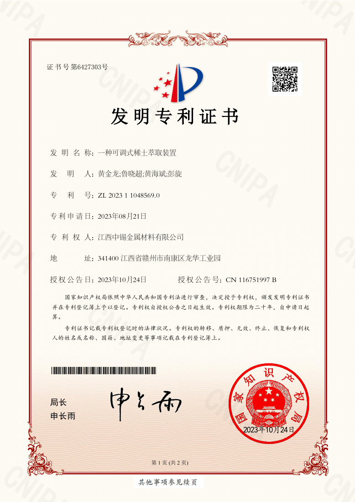
ExtractionAdjustable rare-earth extraction device